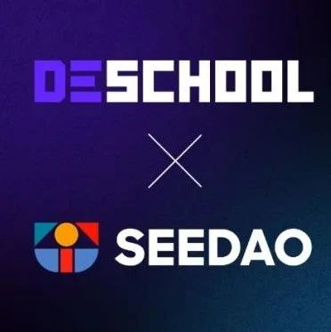

SeeDAO 与 DeSchool 达成战略合作
作者: SeeDao
DeSchool 是一款划时代的学习工具。

DeSchool 是一款划时代的学习工具，其目标是探索Web3时代的教育机制，服务Web3 时代的学习者与建设者。眼下，Web3经济体正在兴起，服务于工业时代的教育体系逐渐落伍。DeSchool团队相信，传统的高校行政系统将在去中心化运动的浪潮中被弱化，我们最终会形成一套与Web3经济体、与DAO这种组织形式相符合的能力认证体系与学习教育平台。而这正是 DeSchool 正在建设的方向。SeeDAO是一个DAO的孵化器，也是华语世界影响力最大的DAO。SeeDAO致力于为华语世界培养DAO的人才，营造适合Web3创新发生的氛围，促使Web3先锋的理念、产品和内容在这里诞生。截至目前，SeeDAO已形成翻译、宣传、运营、设计、艺术、建筑、产品、开发、投研、NFT Club这十个公会。社区成员接近10000人，实质贡献者超过了800名。此外，SeeDAO已经完成了估值3000万美金的A轮融资，投资人包括HashKey Capital、HashGlobal、Nervos、Tess Venture、MaskNetwork、ChainIDE、火凤资本。SeeDAO有两个原则。一个是“DAO it，DO it”，即不仅要强调DAO的理念和金融，更强调DAO的实践和具体建设。另一个是“Co-build，Co-share”，即社区共建的果实由付出劳动的成员共同分享。接下来，SeeDAO致力于建设华语世界最大的数字城邦。DeSchool由SeeDAO战略孵化。DeSchoo 团队成员来自 SeeDAO 各个公会；SeeDAO 为 DeSchool 启动提供了最初的资金支持、内容和流量支持，且持有 DeSchool 10% 的 token。接下来，SeeDAO内部产出的课程、讲座将全部上线 DeSchool。包括且不限于：治理工程师、运营学院系列课程、Web3大学全部课程；结合 DeSchool 上的 SBT，SeeDAO 也将通过DeSchool重塑自身的治理体系和身份体系。此外，SeeDAO也将推动DeSchool与其生态孵化的其他项目合作。DeSchool 的价值与整个 web3 经济体密切相关：我们将与DAO时代的建设者站在一起，敏锐的觉察新时代的人才需求，上新 Web3 Builder 最需要的课程。未来，DeSchool 将作为一个学习工具开放平台，无差别地服务整个 Web3 世界中的 DAO、学习者和项目方。我们期待在这条 Web3 时代教育的探索之路上，遇见更多心怀理想的实践者，共同建设Web3！